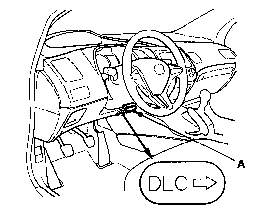
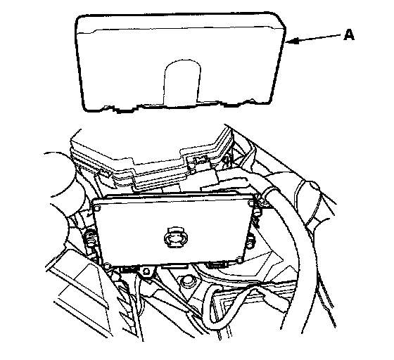
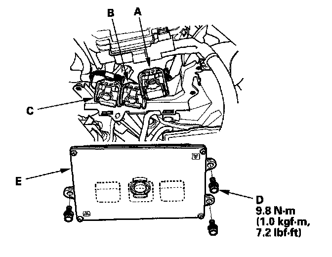

Engine Control Module: Service and Repair
ECM ReplacementNOTE:
- Make sure the HDS is loaded with the latest software version.
- If you are replacing the ECM after substituting a known-good ECM, reinstall the original ECM, then do this procedure.
- During the procedure, if any READ DATA, WRITE DATA, or other data checks fail, note the failure, then continue.
1. Make sure you have the anti-theft code for the audio system and the navigation system (if equipped).

2. Connect the HDS to the data link connector (DLC) (A) located under the driver's side of the dashboard.
3. Turn the ignition switch ON (II).
4. Make sure the HDS communicates with the ECM. If it doesn't, go to the DLC circuit troubleshooting. If you are returning from DLC circuit troubleshooting, skip steps 5 through 8,17 through 19,22, and 23, and do these procedures after replacing the ECM (USA, Canada models):
- Replace the engine oil and the engine oil filter.
- Clean the throttle body. Testing and Inspection
5. USA, Canada models: Select the PGM-FI system with the HDS.
6. USA, Canada models: Select the INSPECTION MENU with the HDS.
7. USA, Canada models: Select the ETCS TEST, then select the TP POSITION CHECK, and follow the screen prompts.
NOTE: If the TP POSITION CHECK indicates FAILED, continue with this procedure.
8. USA, Canada models: Select the REPLACE ECM MENU, then READ DATA, and follow the screen prompts.
NOTE::
- Doing this step copies (READS)the engine oil life data from the original ECM so you can later download (WRITES) it into the new ECM.
- If READ DATA indicates FAILED, continue with this procedure.
9. Turn the ignition switch OFF.
10. Remove the battery.

11. Remove the cover (A).

12. Remove the bolts (D), then remove the ECM (E).
13. Disconnect the ECM connectors A, B, and C.
NOTE: ECM connectors A, B, and C have symbols (A=Square, B=Triangle, C=Circle) embossed on them for identification.
14. Install the ECM and the battery in the reverse order of removal.
15. Turn the ignition switch ON (II).
16. USA, Canada models: Manually input the VIN to the ECM with the HDS.
NOTE: DTC P0630 "VIN Not Programmed or Mismatch" may be stored because the VIN has not been programmed into the ECM; ignore it, and continue this procedure.
17. USA, Canada models: If the READ DATA (engine oil life) failed in step 8, go to step 20. Otherwise, go to step 18.
18. USA, Canada models: Select the PGM-FI system with the HDS.
19. USA, Canada models: Select the REPLACE ECM MENU, then WRITE DATA, and follow the screen prompts.
NOTE: If the WRITE DATA indicates FAILED, continue with this procedure.
20. Select IMMOBI system with the HDS.
21. Enter the immobilizer code with the ECM replacement procedure in the HDS; it allows you to start the engine.
22. USA, Canada models: If the TP POSITION CHECK failed in step 7 clean the throttle body, then go to step 23.
23. USA, Canada models: If the READ DATA failed in step 8 or the WRITE DATA failed in step 19, replace the engine oil and engine oil filter, then go to step 24.
24. Select PGM-FI system and reset the ECM with the HDS.
25. Update the ECM if it does not have the latest software.
26. Do the ECM idle learn procedure.
27. Do the CKP pattern learn procedure.
28. Enter the anti-theft code for the audio system and the navigation system (if equipped), then set the clock (if needed).